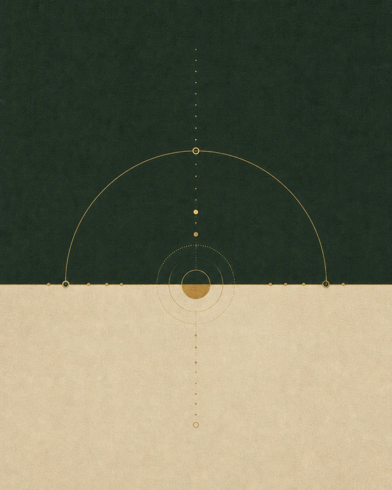
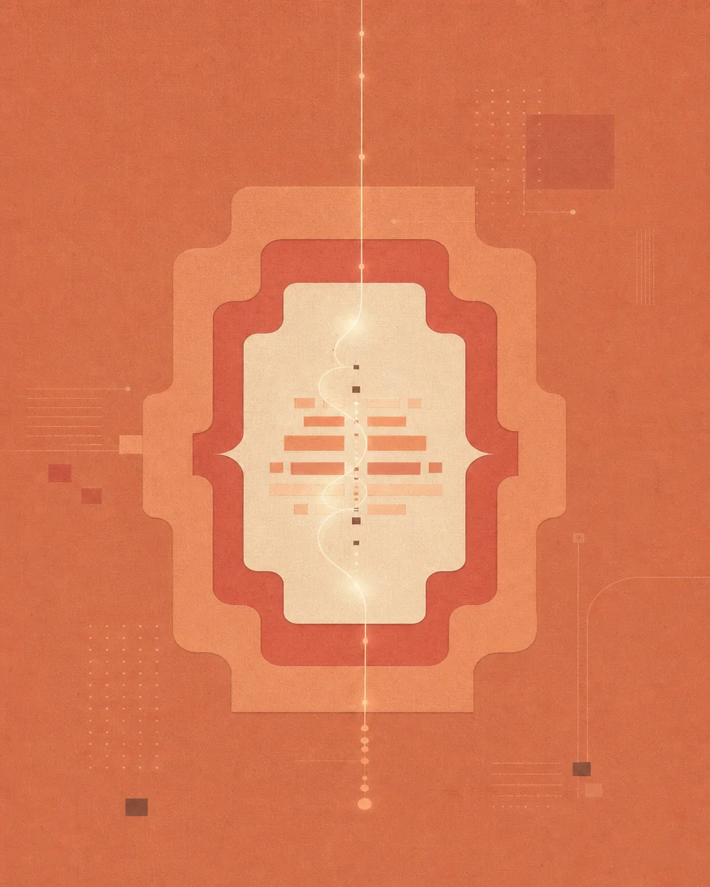
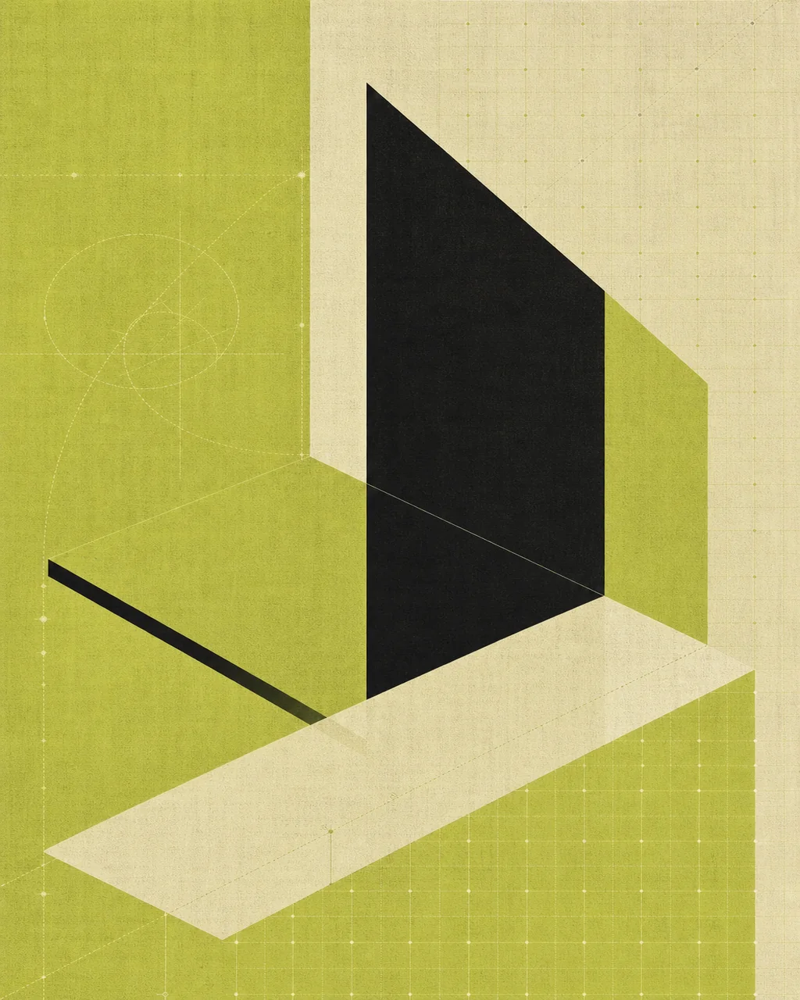
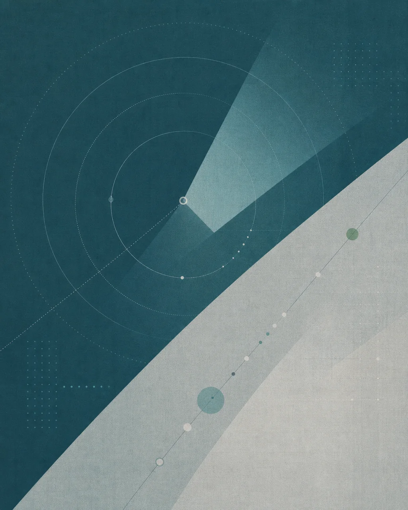
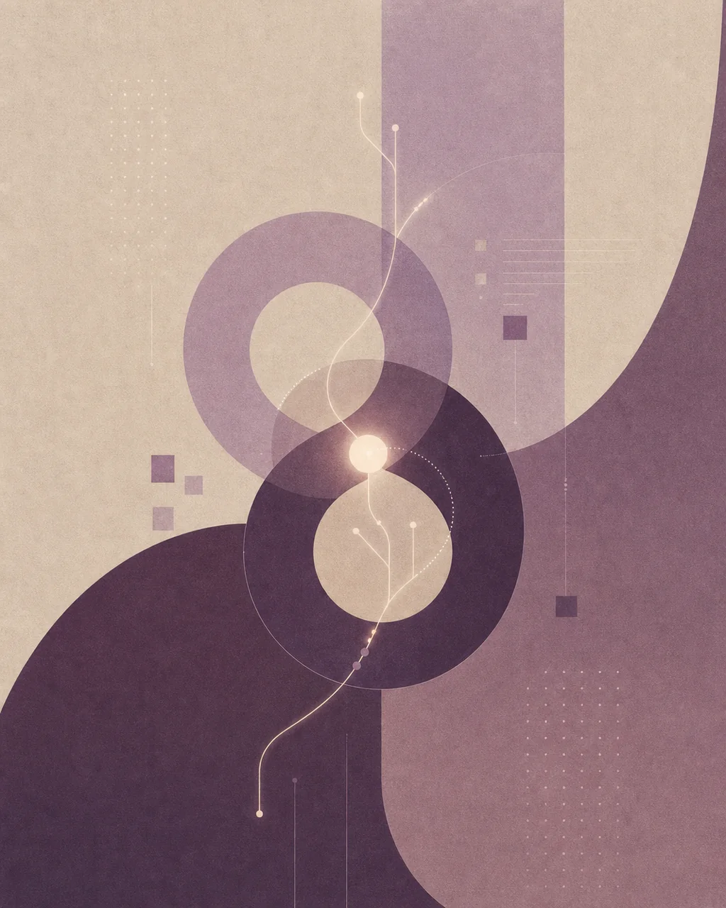
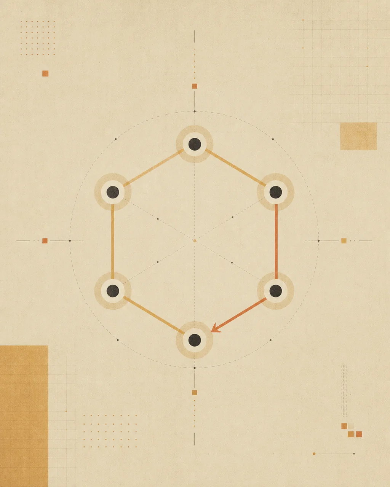

01 · 已完成Finance Header
研究滚动驱动的视频时间轴与沉浸式界面叠层。
打开项目 →Six studies for turning references into working products
0801 Research Volumes · Static catalog
当前环境未启用 3D 场景，但所有项目内容和链接仍然可用。

01 · 已完成研究滚动驱动的视频时间轴与沉浸式界面叠层。
打开项目 →
02 · 研究样例把模糊需求转化为带范围、约束和验收条件的执行契约。
打开项目 →
03 · 当前研究把精选产品与研究项目转化成可探索的空间目录。
阅读研究说明 →
04 · 概念方向从多来源信息中提取少量、可信、可解释的变化信号。

05 · 概念方向通过模拟、追问和长期反馈训练真实能力。

06 · 研究方法每次实现都经过真实浏览器观察、修正与回归验证。